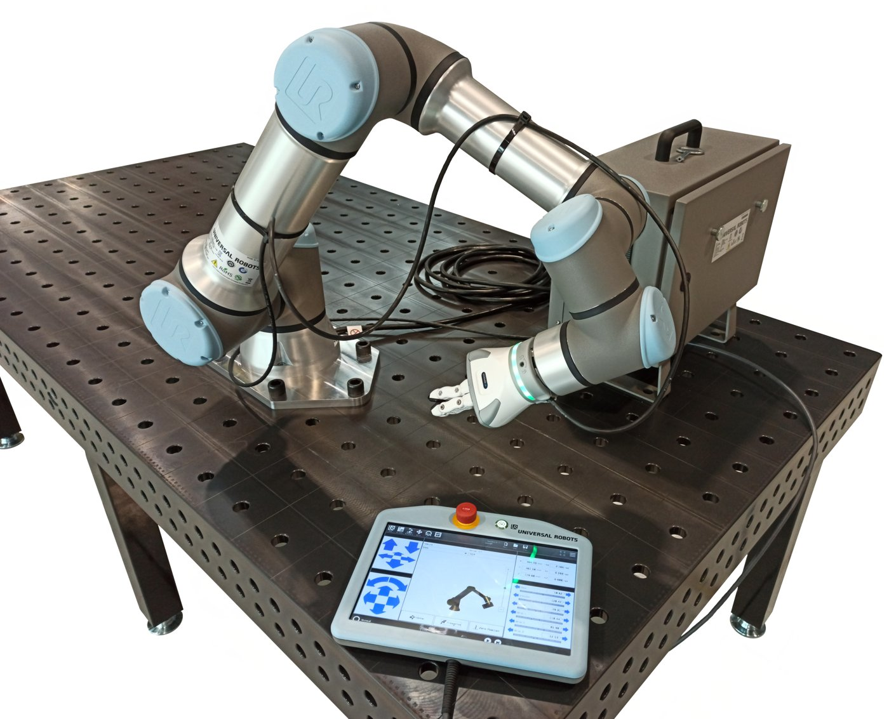
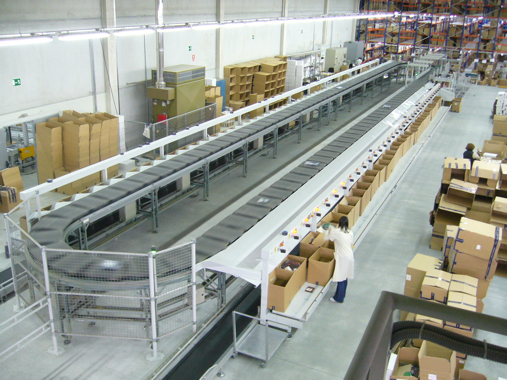

Executive Summary
This article takes apart one number disclosed at a cross-ministry program briefing, Physical AI Alliance Day, held at COEX in Seoul on 13 October 2026. Korea's Ministry of Science and ICT has newly funded three physical AI programs for 2027, and together they come to ₩121 billion, or about $78 million. The part worth looking at is not the total but the way it was cut.
Of the three shares, ₩40 billion goes to building a Physical AI Training Center. That is not money for making a model, nor money for installing one in a workplace. It pays for a facility that collects the behavior data a robot learns from. The National IT Industry Promotion Agency (NIPA) builds one such site in 2027 and lets companies share it. Yet nothing in the material released so far says in what format that facility will record the data it produces, or who decides that format.
Every amount and date carried here comes from coverage of the day and from 2027 budget material. Two passages go further than the announcement does: the part of Section 4 that treats postal logistics as an awkward place to gather data, and Section 5, which reads the missing format line as a precondition problem for a shared facility.
Key numbers
Four cells. The first two are the size of the money disclosed and the facility's share of it. The second two are how many sites actually go up in 2027 and how long it would take to gather the data robot learning needs if people made all of it themselves.
Sources: Aju Business Daily (13 Oct 2026), Market Economy News, E-Focus. All in Korean.
₩121 billion
Sum of three new 2027 programs
The figure disclosed at the 13 October briefing. Its scope differs from the ministry's entire physical AI budget of ₩462.2 billion
₩40 billion
Share for building the training center
About a third of the ₩121 billion. It pays for a shared-use base fitted with robots, sensors and remote-operation equipment
One site
Centers built in 2027
The June 2026 strategy drew five regional centers, and the 2027 budget holds one of them. Neither the location nor the call date has been disclosed
Five years
Collecting at eight hours a day
The figure Song Chang-jong, a team leader at the ministry, used at a briefing on 1 July 2026 to describe how much data robot learning needs
Where the ₩121 Billion Goes
Korea's Ministry of Science and ICT held a cross-ministry program briefing called Physical AI Alliance Day at COEX in Seoul on 13 October 2026 and set out its plans for 2027. Three newly funded programs come to ₩121 billion between them. Core technology development, run by the Institute of Information and Communications Technology Planning and Evaluation (IITP), takes ₩55 billion. Construction of the Physical AI Training Center, run by the National IT Industry Promotion Agency (NIPA), takes ₩40 billion. A field pilot and rollout program, run by the same agency, takes ₩26 billion.
The largest share, ₩55 billion, goes into general-purpose foundation models, simulators, and the technology for executing and verifying robot behavior. Kim Wook, the IITP program manager, put the goal of that program as developing "a world-class physical AI model that acts like a person and can carry out many different tasks." The other two are not model money. One is a facility for collecting the data a model learns from, and the other is the cost of putting that model into a real workplace.
At the same event Kim described in units of time how far off that goal is. "Most physical AI demonstrations today succeed at a set task in a limited environment," he said, and "most robots today handle tasks of about ten seconds, while a person plans and carries out tasks that run five minutes, ten minutes, an hour." The aim, in his words, is "not a single task but completing the flow of work the way a person does, and adapting to work at a different site." That remark connects straight to the data question further down. Recording a ten-second motion and recording the flow of an hour-long task call for different things to be written down, even inside the same facility.
This is also the program that moves first. After comments are taken at a public hearing on the new projects, the plan is to issue the call in January 2027 and select the performing institutions in March. Coverage puts the hearing in November or December, and either way it falls within this year.
Reports on the announcement give different sums for physical AI because they are naming different scopes. Keeping the three apart keeps what comes next steady.
| Amount | What it counts | Source and context |
|---|---|---|
| ₩121 billion | Sum of three physical AI programs newly funded by the ministry for 2027 | Disclosed at the 13 October program briefing |
| ₩462.2 billion | The ministry's entire physical AI budget for 2027 | Material submitted for the National Assembly audit. Up 162.9% on ₩175.8 billion in 2026, and 4.9% of the ministry's ₩9.42 trillion AI budget |
| ₩3.1 trillion | Physical AI budget across every ministry for 2027 | The 2027 budget bill. Up from ₩900 billion in 2026 |
The rest of this article deals with the top row. The subject is the ₩121 billion in three programs this briefing showed for the first time, not the ₩3.1 trillion across all ministries or the ₩462.2 billion the ministry holds on its own.
₩40 Billion Builds One Shared Site
The ₩40 billion program NIPA runs is named Physical AI Training Center construction. Its stated purpose is a shared-use base where the behavior data AI learning needs can be secured and where technology can be piloted and verified. A learning environment fitted with robots, sensors and remote-operation technology lets companies produce the behavior data their actual tasks require, train on it and verify it. One site goes up in 2027. The coverage of the announcement, though, says nowhere when the call for that program goes out. What has been disclosed stops at the amount and the number of sites.
The weight sits on the words shared use. There are broadly two ways to teach a robot a job. One is teleoperation, in which a person drives the robot by remote control and demonstrates the same motion over and over. The other is simulation, in which reality is copied into a virtual space and synthetic behavior data is mass-produced. The June strategy drew both into the training center. What this ₩40 billion equips as a facility is the first of the two, the one a person drives. How much of that is needed is something the ministry has already put a number on. Song Chang-jong, a team leader at the ministry, said at a briefing on 1 July 2026 that "even if a person made data eight hours a day, securing enough data would take five years." At the same briefing the government projected that the split between real and synthetic data, currently about even, would tilt as far as 90% synthetic. In other words, the government has already conceded in figures the limit of what a person can demonstrate.

Few companies can set up robots, sensors and control rigs and keep them running for five years. The equipment costs money, but the harder part is that few companies can wait for that equipment to start producing data. The ₩40 billion goes into having the state gather that equipment at one site and letting several parties use it in turn. Before it is a choice about quality, it is a choice to lower the cost of entry.
What this choice means on the data side is plain. The largest producer of robot-learning behavior data in Korea becomes a shared facility rather than any single company. Whatever format that facility writes its data in becomes, in effect, the standard for the field.
Five Regions on Paper, One Site Funded
The training center is not an idea that first appeared in October. The K-Physical AI Full-Stack Strategy, released by the ministry on 19 June 2026, compressed the 40 tasks shortlisted in the alliance's first phase into three flagship projects, and at the center of them it placed behavior-data training centers across five regions of the country. What made that moment notable is that a place to collect data, rather than a chip or a model, was named the first priority. Pebblous covered that choice separately, and the article closed by noting that giving the centers a concrete shape and writing them into the 2027 budget had been flagged as the next step (Physical AI: Why Korea Is Building Data Training Centers First, 29 June 2026). The announcement of 13 October is that next step.
The shape of the center reported in June was more concrete than what has been disclosed now. It was described as a central hub in Seoul and elsewhere, with regional AX hubs collecting data from manufacturing, farming, logistics and service sites, and what it would collect was "unit-motion data that can be broken down into reaching, grasping, twisting and pulling, as in picking fruit." One industry figure said at the time that "what is needed at this stage is shared data that makes robots perform basic motions properly, rather than companies' sensitive process data." That is also a statement that someone has to decide where a motion is cut and counted as one unit, and that criterion appeared neither in June nor in October.
What changed is the scale. June drew five regions, and the 2027 budget holds one site. It can be read as a cutback or as a first spade in the ground. With neither the location nor the call date disclosed, there is no ground for settling on either reading now.
Either way, one shared facility runs in 2027. The data format one site produces becomes the reference point when four more arrive later. The structure gives the one built first a hold on the standard, so what that first site writes down, and how, outlasts the fact that the scale came down.
The First Field Is Postal Logistics
The remaining ₩26 billion is the field pilot and rollout program. Physical AI goes into the processes that sort, inspect, move and load mail and parcels, to build a reference case. About two consortia, made up of AI model and data companies together with Korea Post and others, will be supported. The call goes out in March 2027, and selection, evaluation and the agreement follow in April before work starts. Of the three programs, the training center is the only one with no call date. Yoo Han-jong, who leads NIPA's physical AI team, described the purpose of the pilot as "applying it in the public sector first and then spreading it into private logistics technology."
Yoo also stated the reason postal logistics was chosen. "Automation robots are already in the postal logistics process, but most mail items come in irregular sizes and materials, so existing automation robots run into limits." The sizes and materials named there are the physical shape of the mail. The site was picked not because the same motion repeats easily but for the opposite reason: the object to be picked up differs every time, and existing automation stalls there. It looks in the same direction as Kim Wook's phrase about "adapting to work at a different site."

The reading from here on is this article's own. A site where the object differs every time is also an awkward site to collect data in. When the object is the same, success and failure can be judged by whether the motion was reproduced, but where mail of every size and material arrives mixed together, someone has to decide first what counts as a single success. How that judgment is written down in the first pilot becomes the shape of the data that piles up afterward.
Programs from other ministries were disclosed at the same briefing. The Ministry of SMEs and Startups put ₩172.8 billion into making manual and hazardous processes at small manufacturers autonomous, the first-year share of a program planned at ₩340 billion over three years. Farming drew a program to automate the full cycle of tilling, sowing and harvesting, at ₩78 billion over five years with ₩11.2 billion in 2027, and the Ministry of Oceans and Fisheries allotted ₩25 billion through 2031, ₩2.92 billion of it in 2027, to autonomous cargo handling at smart ports. The emphases differ. The science ministry's share leans toward technology and facilities, while the SME ministry's leans toward spreading technology that already exists into workplaces.
Why Pebblous Is Watching This Announcement
One condition rides along with the phrase shared-use base. For several companies to use each other's data made at the same facility, it has to be written in the same data format. That covers the coordinate frame in which a robot arm's joint angles are recorded, the way camera video and force-sensor readings are aligned in time, whether a failed attempt is kept or discarded, and whether the experience of the person at the controls is recorded alongside it. When these differ between institutions, data piles up without combining.
The material from 13 October carries no item for setting that format. The ₩121 billion splits into core technology development, center construction and the field pilot, and in none of the three is there an owner or a date for deciding the data format or the metadata schema. The center's location, and which tasks will be recorded at what resolution, remain undisclosed as well.
This is not a gap nobody has noticed. At the physical AI alliance review meeting held the same day in the same venue, one of the five points participants raised from the field was "data standardization and shared use." The other four were widening pilot opportunities, connecting demand-side and supply-side companies, the supply of specialist staff, and linking investment to commercialization. The governance subcommittee also reported on standardization and on building the ecosystem through global cooperation. The industry asked for a format that day in that room, and the budget table released the same day has no line for it. What is missing is not awareness of the problem but an owner for the work and money to do it with.
What follows here is this article's reading. Deciding the format after the facility starts running is too late. Rewriting data already collected costs far more than writing it that way from the start, and sometimes it cannot be undone. Seen that way, one site in 2027 is closer to fortunate. There is time for a single site to set the standard before five run at once in five different formats. In an earlier article we noted that ₩16 trillion in policy financing showed no visible share for collecting data (The Data Gap in Korea's $10.3 Billion Physical AI Financing, 14 July 2026). This budget table names that share at ₩40 billion. The empty cell has moved one column over.
What Pebblous has worked on is judging whether collected data is in a state fit for learning, and filtering out what is not. From that seat, the ₩40 billion in this announcement is a welcome number, and the empty format cell is a cell nobody has put a value in yet. The earliest date on the published schedule is the public hearing on the new projects, due within this year. The center does not even have a call date, so if a cell for the format is going to appear, it has to come before the blueprints for the facility.
Thank you for reading this far. Coverage of the announcement is here, in Korean. If you work with this in the field, we would like to hear which fields you think have to be written alongside robot behavior data when it is collected at a shared facility.
References
Coverage of the announcement
- 1.Aju Business Daily. (13 Oct 2026). "MSIT ramps up physical AI investment, puts ₩121 billion into pilots and R&D" (in Korean).
- 2.Aju Business Daily. (13 Oct 2026). "Deputy PM Bae reviews physical AI alliance progress, stresses field-driven results" (in Korean).
- 3.Market Economy News. (13 Oct 2026). "Government expands 2027 physical AI pilots into manufacturing, logistics and farming" (in Korean).
- 4.Korea IT News (KOIT). (Oct 2026). "Physical AI budget up tenfold, still under 5% of the AI budget" (in Korean).
- 5.Supple. (Sep 2026). "[2027 Budget] ₩3.1 trillion for physical AI, evolving toward an AI agent for everyone" (in Korean).
Background
- 6.E-Focus. (2026). "Robot and physical AI firms raised 1.7x more funding last year, expand data-collection equipment" (in Korean). Carries Song Chang-jong's remark from a 1 July 2026 briefing.
- 7.Hankyung (Korea Economic Daily). (25 Jun 2026). "A 'robot training camp' to collect physical AI data" (in Korean). A draft-stage report roughly four months ahead of the 13 October announcement.
Previous Pebblous articles
- 8.Pebblous Data Communication Team. (29 Jun 2026). "Physical AI: Why Korea Is Building Data Training Centers First."
- 9.Pebblous Data Communication Team. (14 Jul 2026). "The Data Gap in Korea's $10.3 Billion Physical AI Financing."